AI 구독으로 얻을 수 있는 세 가지
발표자는 ChatGPT, Claude, Grok, Gemini에 중국 모델까지 구독하면서 AI에 천만 원쯤 썼어요. 그렇게 해 본 프로젝트가 200개가 넘어요. 아래 슬라이드 왼쪽이 그 200개, 오른쪽 동그라미가 실제로 돈이 된 15개 정도예요. 나머지는 거의 날렸다고 해요.
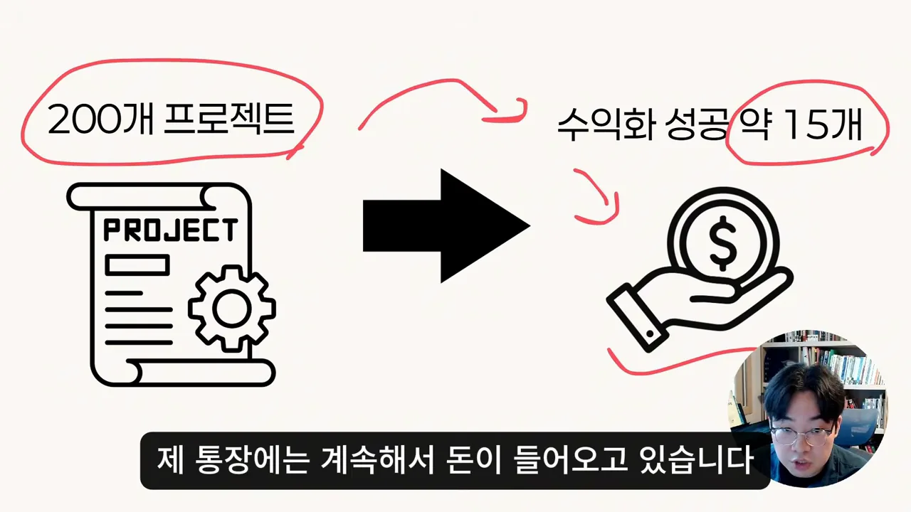
대부분은 AI에게 질문하고, 검색시키고, 요약시키는 데서 멈춰요. 발표자는 이걸 '삽질'에 비유해요. 그러고는 AI 구독에서 얻을 수 있는 가치를 세 가지로 나눠요. 아래 아이콘이 왼쪽부터 시간 절약, 생산성, 돈이에요.
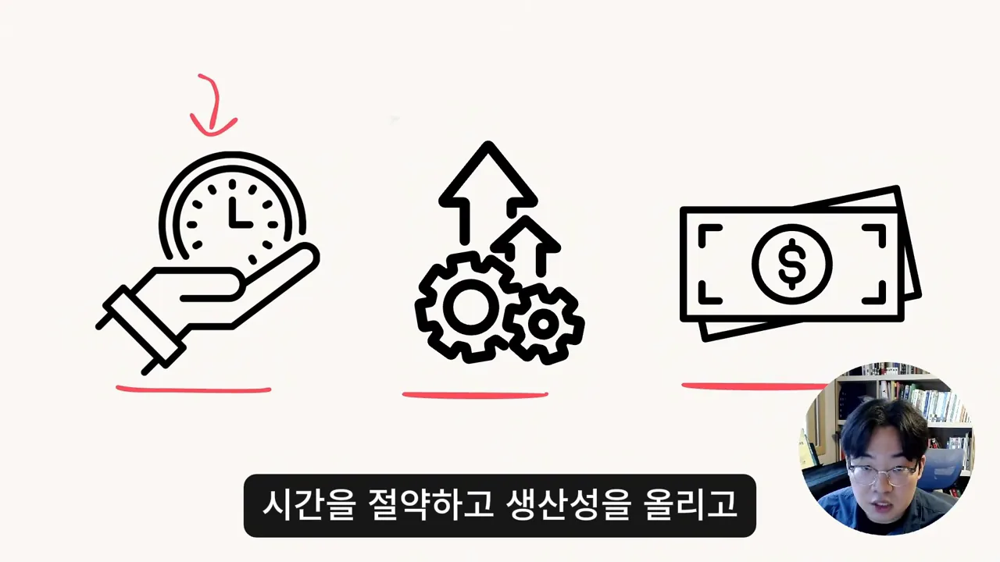
시작하기 전에 선도 그어요. 누구나 하루 10분으로 월 천만 원을 번다는 이야기가 아니고, 원래 개발자라서 유리했던 점도 분명히 있대요. 대신 각 방법으로 돈이 실제로 어떻게 들어오는지를 보여 주겠다고 해요. 세 번째 방법은 수익이 셋 중 가장 작지만, 지금 바로 해 볼 수 있고 아무것도 안 해도 돈이 계속 들어오는 방법이라고 미리 알려 줘요.
첫 번째: AI로 만든 디지털 상품 팔기
첫 번째는 AI로 만든 디지털 상품을 파는 방법이에요. 슬라이드는 이 방법의 무대로 크몽을 들고, 발표자가 여기서 번 돈을 '약 500만원'이라고 적어 놨어요.
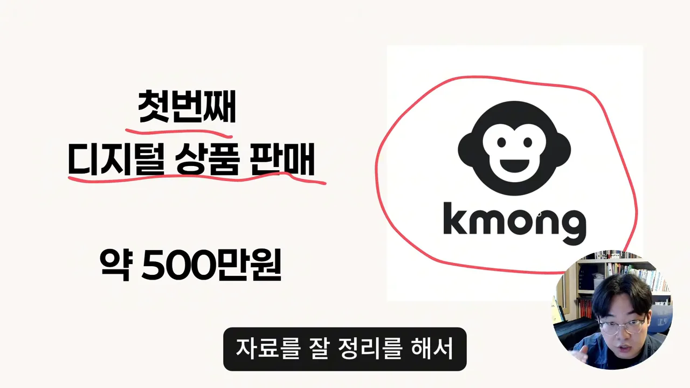
크몽은 여러 분야 전문가가 자기 지식이나 능력을 파는 사이트예요. 발표자가 실제 화면을 열어 보여 주는데, 아래는 비트코인 분야의 전자책 목록이에요. 경제적 자유, 투자 초보 같은 제목을 단 표지가 한 줄로 늘어서 있어요.
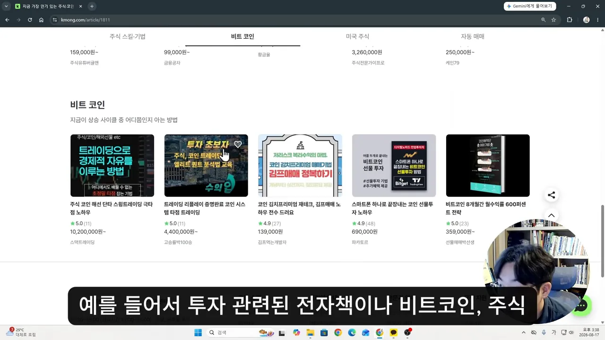
전자책 말고 템플릿도 팔아요. 아래는 '자료·템플릿' 메뉴로, PPT(PowerPoint) 템플릿과 상세페이지 디자인 템플릿이 격자로 깔려 있어요. 이런 디자인 템플릿을 직접 만들어 팔 수도 있어요.
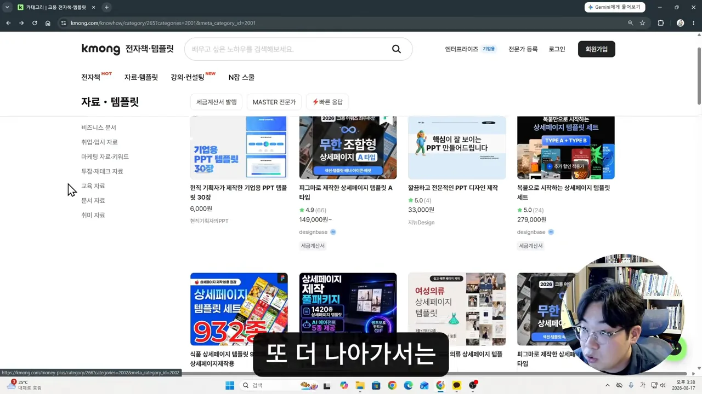
상품만 파는 건 아니에요. 발표자가 크몽에서 직접 해 본 일은 블로그 마케팅 대행이었어요. '블로그'로 검색하면 관리 대행, 포스팅 전문 대행 같은 서비스가 줄줄이 나와요. 어느 정도 지식이 있으면 AI를 써서 팔 수 있는 서비스가 꽤 많다고 해요.
바로 권하지 않는 이유
발표자는 이 방법을 첫 번째로 소개하면서도 바로 권하지는 않아요. 크몽 같은 곳에서는 실력이나 빨리 만들어 내는 생산력도 중요하지만, 결국 내 상품을 알리는 마케팅 실력이 더 크게 작용하기 때문이에요. 이미 자기 분야에 능력이 있고, AI를 많이 쓸 수 있는 업종에 있다면 해 볼 만하다고 정리해요.
두 번째: 개발 외주
두 번째는 발표자가 가장 많이 쓰고 가장 큰돈을 번 방법이에요. 슬라이드에는 숨고 로고와 함께 '약 5000만원 + 월 40만원'이 적혀 있어요.
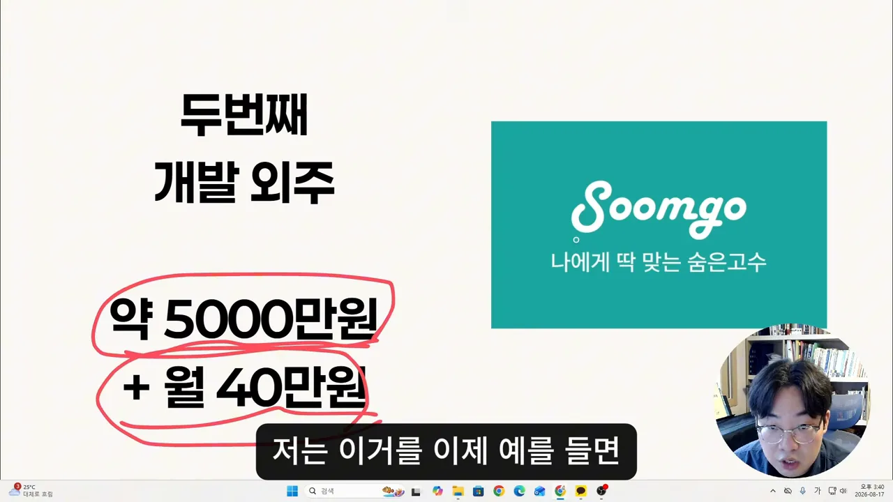
두 숫자는 성격이 달라요. 5,000만 원은 외주 4건 정도에서 나왔는데, 그중 한 건의 단가가 특히 높았어요. 월 40만 원은 지인을 통해 받은 다른 한 건이에요. 한 번에 큰돈을 받는 대신, 서비스를 계속 관리해 주면서 매달 받는 방식이었어요.
| 받은 방식 | 금액 | 어떤 일이었나요 |
|---|---|---|
| 건별로 한 번에 | 약 5,000만 원 (외주 4건 정도) | 한 건의 단가가 특히 높았어요 |
| 매달 꾸준히 | 월 40만 원 | 지인에게 받은 일로, 서비스를 관리해 주는 개발 업무 |
이런 외주는 크몽이나 숨고에서 받을 수 있어요. 숨고 화면에서 '외주'를 열면 아래처럼 고수 목록이 나와요. 이름과 평점, 짧은 소개가 한 줄씩 붙어 있고, 개발 외주와 디자인 외주를 함께 찾아볼 수 있어요.
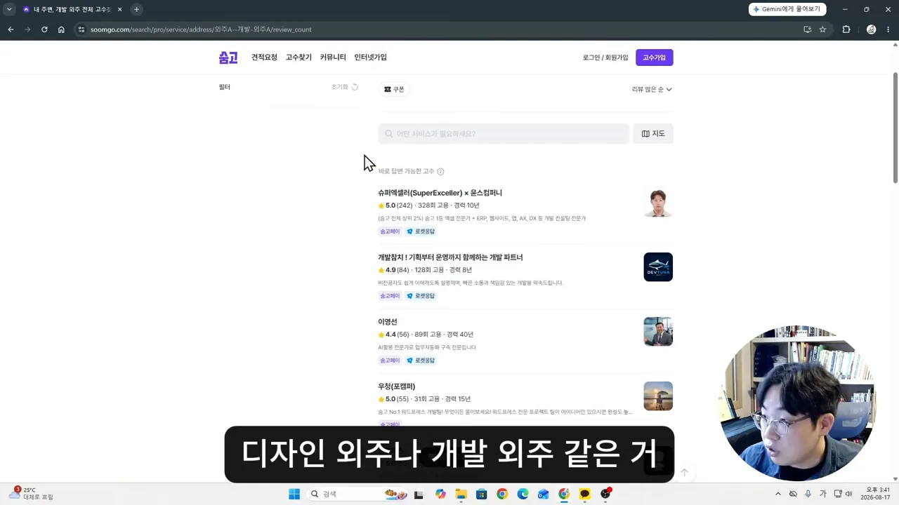
개발자가 아니라면 어려운 이유
발표자는 이 방법을 '나는 이렇게 했다'는 사례로만 보여 줘요. 대부분은 개발자가 아니고, 전문 개발 업무를 맡기는 힘들다는 거예요. 바이브 코딩으로 '딸깍' 만들 수 있다는 말도 있지만, 지식이 전혀 없으면 딸깍만으로는 안 된다고 해요.
영상 끝 정리 부분에서는 이유를 더 분명히 말해요. 서비스는 만든다고 끝이 아니에요. 문제가 생겼을 때 대응하고, 관리·유지보수를 해야 할 일이 정말 많아요. 그래서 제대로 배우지 않았다면 외주는 권하지 않는다고 해요.
서비스만 만든다고 다가 아니거든요 서비스 이외에 정말 관리, 유지, 보수해야 될 것들이 정말 많습니다
— 영상 09:28
세 번째: 광고로 버는 수익형 웹사이트
세 번째도 바이브 코딩이에요. 다만 남의 일을 받는 대신 내 웹사이트를 만들어요. 슬라이드에는 '수익형 웹사이트' 옆에 구글 애드센스 로고, 아래에 '월 30만원 (초보자 가능)'이 적혀 있어요.
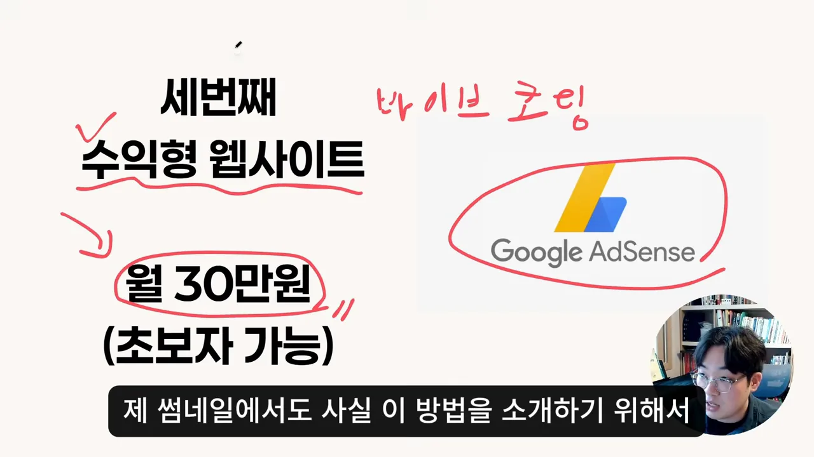
돈이 들어오는 구조
구조는 단순해요. 웹사이트를 무료로 풀고, 거기에 구글 애드센스 광고를 붙여요. 사람들이 사이트를 쓰는 동안 광고가 뜨고, 광고를 보거나 클릭하면 만든 사람 계좌로 돈이 들어와요. 앞의 두 방법과 달리 한 번 만들어 두면 손대지 않아도 돈이 들어와요.
발표자는 얼마나 벌고 있나요
발표자는 이 방법으로 월 30만 원 정도를 계속 벌고 있다고 해요. 그런데 달마다 차이가 커요. 많을 때는 70~80만 원, 적을 때는 20만 원쯤이에요. 말하다 보니 요즘 평균은 40만 원쯤 되는 것 같다고 고쳐 말하기도 해요. 말한 숫자를 그대로 막대로 그려 보면 이래요.
실제 사이트 세 곳 둘러보기
예로 든 건 투자 계산기 사이트예요. 구글에서 '부자계산기'를 검색하면 아래처럼 계산기 사이트가 여러 개 나와요. 발표자는 여기서 위에서부터 세 곳을 차례로 열어 봐요.
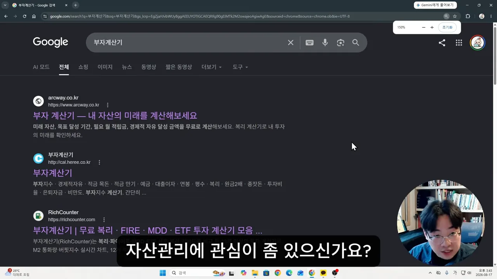
첫 번째 사이트는 현재 자산, 월 적립금, 투자 기간을 넣으면 미래 자산을 계산해 줘요. 화면 아래쪽 검은 칸이 광고예요. 계산과는 상관없는 서버 상품 광고가 떠 있어요.
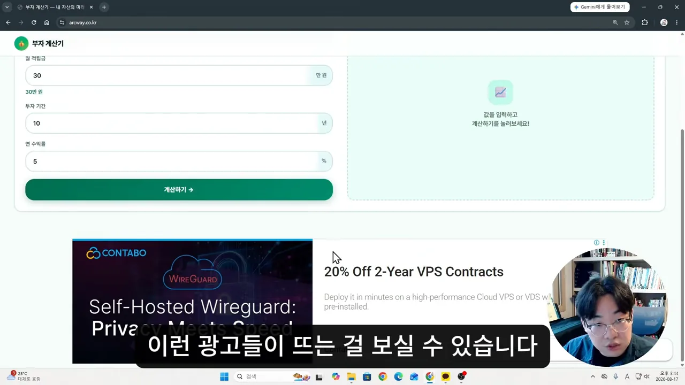
두 번째는 부자지수 계산기예요. 입력 칸은 가운데에 작게 있고, 오른쪽에 Gemini Enterprise 광고가 세로로 여러 개 붙어 있어요.
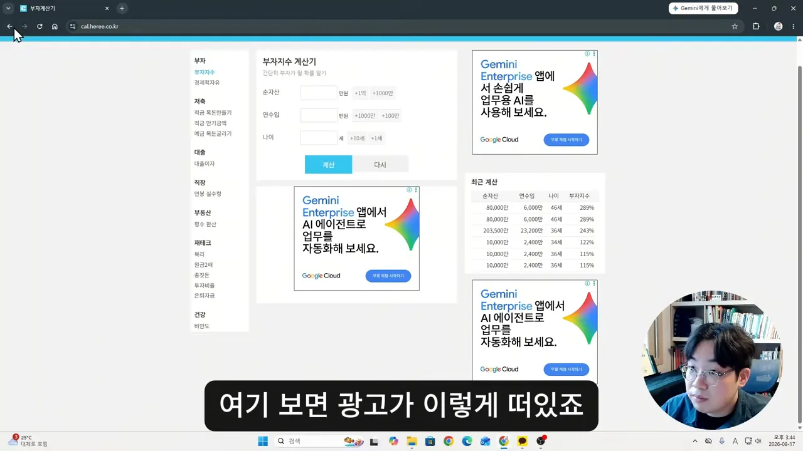
세 번째 RichCounter는 발표자가 광고 세팅을 굉장히 많이 해 놓은 사이트라고 소개해요. 가운데 본문 '부자계산기 — 복리 · FIRE · MDD · ETF 비교를 한 곳에서'를 기준으로 왼쪽, 오른쪽, 아래쪽에 모두 광고가 있어요. 안쪽 계산기로 들어갈 때는 화면 전체를 덮는 광고가 한 번 더 떠요.
한 번 만든다고 바로 되진 않아요
발표자도 만들자마자 누군가 찾아오게 하는 건 쉽지 않다고 인정해요. 대신 여러 번 반복해서 만들다 보면 꽤 높은 확률로 검색에 노출되고, 사람들이 쓰기 시작한다고 해요. 구글 애드센스 블로그를 해 본 사람이라면 같은 개념으로 이해하면 된다고 덧붙여요. 실제로 만드는 방법은 이 영상에서 다루지 않고, 다음 영상들에서 풀겠다고 해요.
세 가지를 나란히 놓으면
영상 끝에서 발표자는 세 방법을 다시 한 번 짚어요. 번 돈의 크기와 누구에게 권하는지를 나란히 놓으면 이래요.
| 방법 | 어디서 | 발표자가 번 돈 | 발표자의 판단 |
|---|---|---|---|
| 디지털 상품 판매 | 크몽 | 약 500만 원 | 마케팅 실력이 중요해서 바로 권하진 않아요 |
| 개발 외주 | 크몽, 숨고, 지인 | 약 5,000만 원 + 월 40만 원 | 가장 컸지만 개발 지식 없이 바이브 코딩만으로는 비추천이에요 |
| 수익형 웹사이트 | 구글 애드센스 | 월 30만 원 정도 | 주 수입은 아니지만 누구에게나 권할 수 있어요 |
번 돈만 보면 외주가 압도적이에요. 그런데 발표자가 가장 권하는 건 금액이 가장 작은 수익형 웹사이트예요. 기준이 '얼마나 버느냐'가 아니라 '개발을 모르는 사람이 지금 시작할 수 있느냐'이기 때문이에요. 외주는 만든 뒤의 관리 부담이 크고, 디지털 상품은 팔리게 만드는 마케팅이 관건이에요. 반면 웹사이트는 만들어 두면 혼자 돌아가요.
발표자는 수익형 웹사이트를 어떻게 만드는지 다음 영상들에서 무료로 풀겠다고 하며 영상을 마쳐요. 그러니 이 영상만 보고는 아직 따라 만들 수 없어요. 시작하기 전에 알아 둘 조건은 아래 보충 설명에 정리했어요.